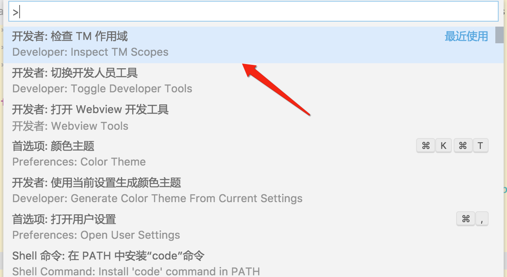
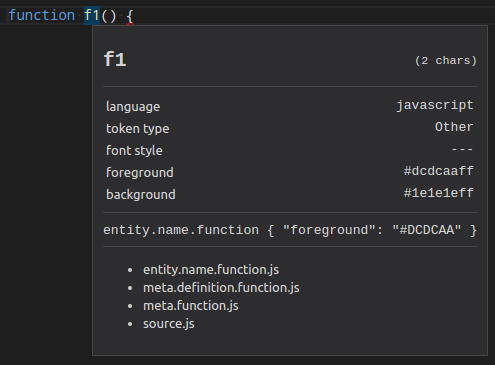
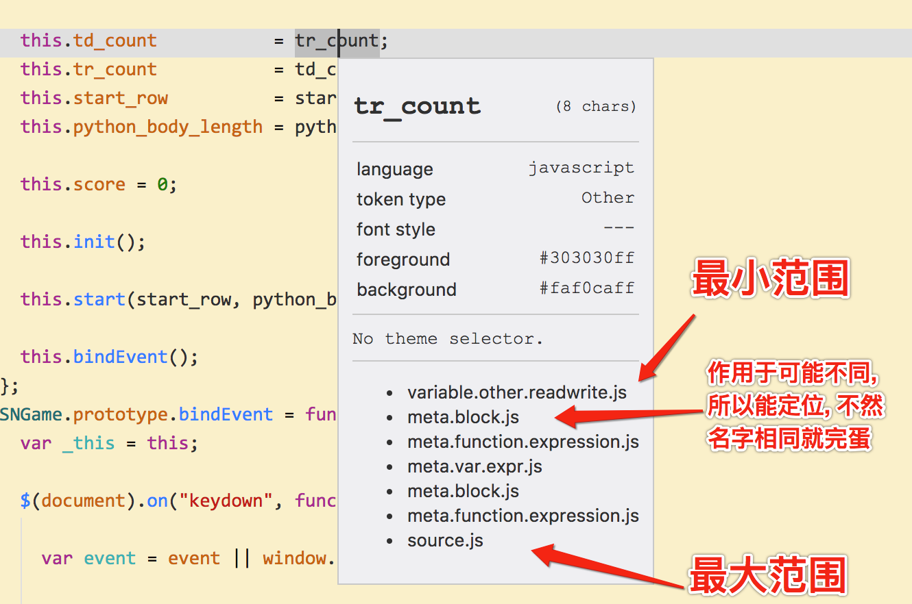
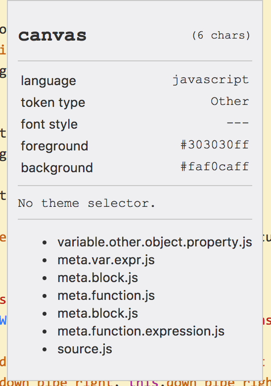
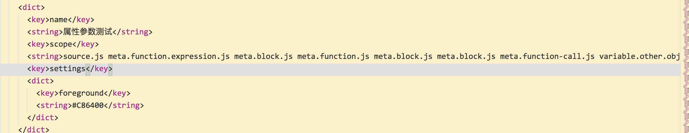

@(工作笔记)
node-record
[TOC]
node版爬虫...
https://github.com/GoogleChrome/puppeteer 踩坑 https://my.oschina.net/javazyw/blog/1585782
如果下载不了 浏览器 就手动下载 在代码中配置...
下载地址: https://download-chromium.appspot.com
参考: https://blog.csdn.net/u010142437/article/details/79126564
const browser = await puppeteer.launch({
executablePath:'/Applications/Chromium.app/Contents/MacOS/Chromium',
args : ['--no-sandbox'],
dumpio: false,
});
获取数组所有排列组合
https://github.com/N-ZOO/everycode/issues/8
var a = [1, 2, 3, 4];
function groupSplit(arr, size) {
var maxSize = arr.length, groupArr = [];
if(size >= 1 && size <= maxSize){
getArr(arr, 0, []);
}
function each(arr, index, fn){
for (var i = index; i < maxSize; i++) {
fn(arr[i], i, arr);
}
}
function getArr(arr, _size, _arr, index){
if(_size === size){
return;
}
var len = _size + 1;
each(arr, index || 0, function(val, i, arr){
_arr.splice(_size, 1, val);
if(_size === size - 1){
groupArr.push(_arr.slice());
}
getArr(arr, len, _arr, i + 1);
});
}
return groupArr;
}
var ret = groupSplit(a, 2);
console.log(ret); // [[1, 2], [1, 3], [1, 4], [2, 3], [2, 4], [3, 4]]
静态文件跨域
https://segmentfault.com/q/1010000013603023?sort=created

console.log('hello world')
VueLoaderPlugin
官方没写 fuck!!!!!!!!!! 参考: https://gist.github.com/yyx990803/e0f4f1275841f4ce756b8c1ac1db76e9
shelljs
官方API:http://documentup.com/shelljs/shelljs#sedoptions-search_regex-replacement-file_array
sed([options,] search_regex, replacement, file [, file ...])
sed([options,] search_regex, replacement, file_array)
Available options:
-i: Replace contents of file in-place. Note that no backups will be created!
Examples:
sed('-i', 'PROGRAM_VERSION', 'v0.1.3', 'source.js');
sed(/.*DELETE_THIS_LINE.*\n/, '', 'source.js');
Reads an input string from files, and performs a JavaScript replace() on the input
using the given search_regex and replacement string or function. Returns the new string after replacement.
Note:
Like unix sed, ShellJS sed supports capture groups. Capture groups are specified
using the $n syntax:
sed(/(\w+)\s(\w+)/, '$2, $1', 'file.txt');
sed使用 js replace实现 , 能跨平台...牛b
global package
babel-cli nrm supervisor webpack webpack-cli webpack-dev-server
shell命令
查看 npm全局路径
## 查看 npm全局路径
npm -g root
安装webpack
cnpm install -g webpack
webpack打包
# 元命令
webpack main.js -o bundle.js --mode development
# 制作成常用脚本
#!/usr/bin/env bash
if [ "$3" == "r" ]; then
webpack $1 -o $2 --mode production
else
webpack $1 -o $2 --mode development
fi
webpack配置文件
cnpm init -f
cnpm install babel-loader --save-dev
cnpm install babel-core --save-dev
cnpm install --save-dev babel-preset-react
cnpm install babel-preset-es2015 --save-dev
cnpm install babel-plugin-transform-object-rest-spread --save-dev
cnpm install --save react react-dom
touch webpack.config.js
printf " //内置path模块：获取到绝对路径
var path = require('path');
//暴露一个对象
module.exports = {
//设置入口文件
entry : './app/main.js',
//设置打包文件的文件夹、文件的名字
output: {
//设置你的打包的文件的文件夹的名字
path : path.resolve(__dirname, 'dist'),
//设置你的打包的文件的名字
filename: 'bundle.js'
},
//当你的js文件发生变化的时候，你在重新的保存的时候，会自动的再一次的打包
watch : true,
//其他模块的设置:翻译器（babel-loader）
module: {
//其他模块的规则
rules: [
{
//①翻译的文件的尾缀什么(.js)
test : /\.jsx?$/,
include: [
path.resolve(__dirname, './app')
],
exclude: [
path.resolve(__dirname, './node_modules'),
path.resolve(__dirname, './app/demo-files')
],
//翻译器的设置
loader : 'babel-loader',
//其他的选项的设置：设置的预设值、插件
options: {
//预设值
presets: ['es2015', 'react'],
//插件
plugins: ['transform-object-rest-spread']
}
}
]
}
};" > webpack.config.js
vscode 自定义颜色主题
在线编辑: https://tmtheme-editor.herokuapp.com/#!/editor/local/Sydney
查看官方文档: https://code.visualstudio.com/docs/extensions/themes-snippets-colorizers
您可以使用Command Palette（⇧⌘P）中的Developer：Inspect TM Scopes命令检查光标处的标记范围，并查看已应用哪个标记规则。
检查范围
  
查看Scope元素定位文档: https://manual.macromates.com/en/scope_selectors
 转
source.js meta.function.expression.js meta.block.js meta.function.js meta.block.js meta.var.expr.js variable.other.object.property.js

能起作用...